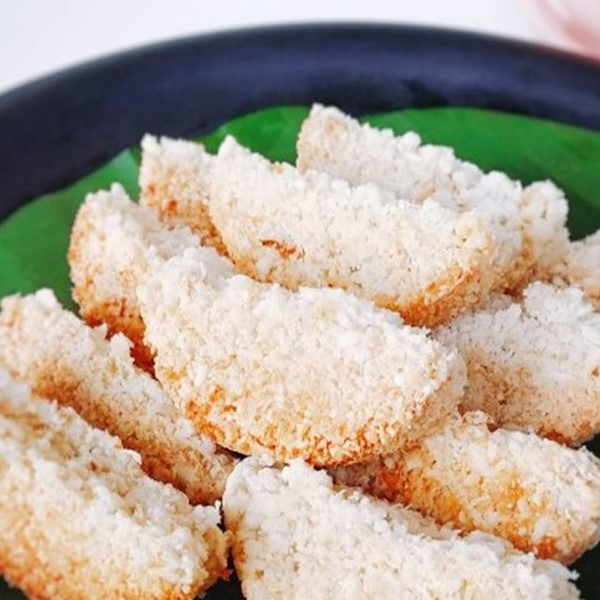

Resep bukan hanya untuk dibaca. Tetapi juga untuk dicoba. Mari kita coba!

Bahan :
Kelapa 2 buah
Tepung ketan 500 gram
Gula pasir 180 gram
Garam 1 sdt
Cara membuat :
Parut kelapa menjadi kasar.
Campur semua bahan di ember plastik dan aduk dengan tangan hingga tidak ada yang menggumpal.
Siapkan lembaran seng dan letakkan di atas kompor.
Ambil cetakan kue rangin beras dan masukkan adonan dengan ditabur perlahan tanpa ditekan ke dalam cetakan, kemudian letakkan cetakan di atas lembaran seng. Masak hingga kecoklatan.
Angkat kue rangin dan ulangi hinga adonan habis.
Menurut perkiraan, 1 resep ini dapat menjadi 3 set kue rangin atau 18 potong kue rangin.